flora
ɑnɑpʰole आनाफोले N सं. a medicinal plant used for cooling the body; औषधीय पौधा जिससे शरीर को ठंडा किया जाता है. SD: flora, फूल-पत्ती, medicine, औषधी.
|
ɑrɑbuco आराबूचो MORPH: ɑrɑ-buco. N सं. root; जड़. ʈoŋ-tɑrɑ-buco टोङ-तारा-बूचो. root of the tree. पेड़ की जड़. SD: flora, फूल-पत्ती.
ɑrɑʈʰimikʰu आराठीमीखू MORPH: ɑrɑ-ʈʰimikʰu. VAR: ɑrɑ-ʈʰimikʰue आराठीमीखूए. N सं. home; forest; native place; country; घर; जंगल; मूल स्थान; देश.  m-ɑrɑ-ʈʰimikʰu माराठीमीखू. our home or forest; Strait Island. हमारा घर या जंगल; स्ट्रैट द्वीप. ʈʰ-ɑrɑ-ʈʰimikʰu ठाराठीमीखू. my forest or home. मेरा जंगल या घर. SD: flora, फूल-पत्ती.
m-ɑrɑ-ʈʰimikʰu माराठीमीखू. our home or forest; Strait Island. हमारा घर या जंगल; स्ट्रैट द्वीप. ʈʰ-ɑrɑ-ʈʰimikʰu ठाराठीमीखू. my forest or home. मेरा जंगल या घर. SD: flora, फूल-पत्ती.
ɑro1 आरो N सं. forest, scant; कम घना जंगल. SD: flora, फूल-पत्ती. SEE: ɑro2 ‘levelled place, inside the mangrove’ ‘समतल जगह, पेड़ के अंदर की आरोhm:{2}’.
ɑʈpʰɑi आटफाई MORPH: ɑʈ-pʰɑi. N सं. wood, dry; सूखी लकड़ी. SD: flora, फूल-पत्ती. SEE: ʈʰitotkɔrɔbo ‘dried soil or land’ ‘सूखी मिट्टी या ज़मीन ठीतोतकौरौबो ’.
ɑʈtereino आटतेरेईनो MORPH: ɑʈ-tere-ino. N सं. wet wood; गीली लकड़ी. SD: flora, फूल-पत्ती.
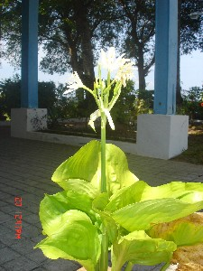 |
bɑɡɑ बागा N सं. a kind of white flower; एक प्रकार का सफ़ेद फूल. SD: flora, फूल-पत्ती.
bɑlo बालो N सं. creeper, thorny; एक प्रकार की कांटेदार बेल. SD: flora, फूल-पत्ती. NT: Even elephants avoid it. हाथी भी इस बेल से डरते हैं।.
 bɑnɑ बाना N सं. a kind of leaf that causes itching if touched; एक प्रकार का पत्ता जिसको छूने से खुजली होती है. SD: flora, फूल-पत्ती.
bɑnɑ बाना N सं. a kind of leaf that causes itching if touched; एक प्रकार का पत्ता जिसको छूने से खुजली होती है. SD: flora, फूल-पत्ती.
bɑrɑtɑ बाराता Etym: Bea; बेया. N सं. caryota palm; चारयोता ताड़. SD: flora, फूल-पत्ती.
bɑtʰeʈɛc बाथेटैच MORPH: bɑtʰe-ʈɛc. N सं. a kind of big leaf on which girls sit during menstruation; बड़ा पत्ता जिस पर मासिकी के समय में लड़कियां बैठती हैं. SD: flora, फूल-पत्ती.
berecer बेरेचेर MORPH: bere-cer. N सं. a tree, the wood of which is used for making bows; पेड़ जिसकी लकड़ी धनुष बनाने में प्रयुक्त होती है. SD: flora, फूल-पत्ती.
beːtlo बेऽतलो N सं. a kind of tree; एक प्रकार का पेड़. SD: flora, फूल-पत्ती.
beʈɑɸo बेटाफो VAR: bɛːʈtɑːfor बैऽट्ताऽफोर. N सं. forest, thin; कम घना जंगल. SD: flora, फूल-पत्ती.
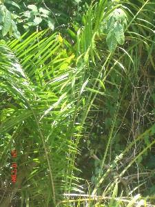 |
biɖo बीडो N सं. a tree used for emergency water; एक प्रकार का पेड़ जो आपातकालीन पानी के लिए प्रयोग होता है. SD: flora, फूल-पत्ती.
biɖocɛ बीडोचै MORPH: biɖo-cɛ. N सं. thorn, of the cane; बेंत का कांटा. SD: flora, फूल-पत्ती.
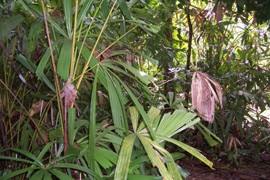 |
biɖotɛc बीडोतैच MORPH: biɖo-tɛc. N सं. a type of cane leaf used for making mats; बेंत का पत्ता जो चटाई बनाने के काम आता है. SD: flora, फूल-पत्ती.
billiɔrɔ बील्लीऔरौ MORPH: billi-ɔrɔ. N सं. a kind of flower which grows on sandy beaches; एक प्रकार का फूल जो बालू में खिलता है. SD: flora, फूल-पत्ती.
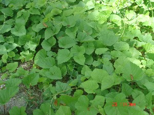 |
bilotɛc बीलोतैच MORPH: bilo-tɛc. N सं. a kind of leaf; एक प्रकार का पत्ता. SD: flora, फूल-पत्ती.
biːrik बीऽरीक N सं. beans; सेम; छीमी; फली. SD: flora, फूल-पत्ती.
 bol1 बोल VAR: boːl बोऽल. N सं. a kind of thick cane; एक प्रकार की मोटी बेंत. SD: flora, फूल-पत्ती. SEE: bol2 ‘fish’ ‘मछली बोलhm:{2}’; bol3 ‘rope’ ‘रस्सी बोलhm:{3}’; bol4 ‘run away’ ‘भाग जाना बोलhm:{4}’; bol5 ‘snake’ ‘सांप बोलhm:{5}’; bol6 ‘tree’ ‘पेड़ बोलhm:{6}’.
bol1 बोल VAR: boːl बोऽल. N सं. a kind of thick cane; एक प्रकार की मोटी बेंत. SD: flora, फूल-पत्ती. SEE: bol2 ‘fish’ ‘मछली बोलhm:{2}’; bol3 ‘rope’ ‘रस्सी बोलhm:{3}’; bol4 ‘run away’ ‘भाग जाना बोलhm:{4}’; bol5 ‘snake’ ‘सांप बोलhm:{5}’; bol6 ‘tree’ ‘पेड़ बोलhm:{6}’.
bol6 बोल VAR: bɔːl बौऽल. N सं. a kind of tree; एक प्रकार का पेड़. Hibiscus tiliacous. SD: flora, फूल-पत्ती. NT: Boiled leaves of this tree are used as medicine. इस पेड़ की उबली हुई पत्तियां दवाई की तरह प्रयोग में आती हैं।. SEE: erceʈɑ ‘tea made with ‘bol’ leaf’ ‘चाय, बोल पत्ते की एरचेटा ’; bol1 ‘cane’ ‘बेंत बोलhm:{1}’; bol2 ‘fish’ ‘मछली बोलhm:{2}’; bol3 ‘rope’ ‘रस्सी बोलhm:{3}’; bol4 ‘run away’ ‘भाग जाना बोलhm:{4}’; bol5 ‘snake’ ‘सांप बोलhm:{5}’.
bolɑʈ बोलाट MORPH: bol-ɑʈ. N सं. wood of the Bol tree; बोल पेड़ की लकड़ी. SD: flora, फूल-पत्ती.
bolkɑšɑr बोलकाशार MORPH: bol-kɑšɑr. N सं. tea, made of Bol leaves; बोल पत्तियों की चाय. SD: flora, फूल-पत्ती.
boltɛc बोलतैच MORPH: bol-tɛc. N सं. bol leaf; बोल पत्ता. SD: flora, फूल-पत्ती. NT: Used for making tea in earlier times. पुराने ज़माने में चाय बनाने के काम में आने वाली पत्ती।.
bolʈolo बोलटोलो MORPH: bol-ʈolo. N सं. flower of the bol tree; बोल पेड़ का फूल. SD: flora, फूल-पत्ती.
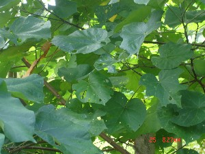 |
bolʈoŋ बोलटौङ MORPH: bol-ʈoŋ. VAR: bolʈɑŋ बोलटाङ. N सं. tree, Bol; बोल पेड़. SD: flora, फूल-पत्ती. NT: This tree is cut and boiled. The water is used for medicinal purposes. बोल पेड़ के तने को काटकर उबाला जाता है और उसका पानी आपातकाल (दवाई की तरह) में पीया जाता है।.
boːr बोऽर N सं. a kind of thorny creeper; एक कंटीली लता. SD: flora, फूल-पत्ती.
botek बोतेक Etym: Jeru; जेरू. VAR: pɑtɑkɑ पाताका. Etym: Bea; बेया. N सं. a kind of flower; एक प्रकार का फूल. SD: flora, फूल-पत्ती. NT: The flower is associated with the time period between mid-February and mid-May, which is when it blooms. इस फूल का खिलना मध्य फरवरी से मध्य मई के महीनों का द्योतक है। बसन्त ऋतु से सम्बंधित।.
 bɔp बौप N सं. a kind of tree; एक प्रकार का पेड़. SD: flora, फूल-पत्ती.
bɔp बौप N सं. a kind of tree; एक प्रकार का पेड़. SD: flora, फूल-पत्ती.
bɔpʈɔlɔ बौप्टौलौ MORPH: bɔp-ʈɔlɔ. N सं. flower of the Bop tree which blossoms during the rains; बौप पेड़ का फूल जो बरसात में खिलता है. SD: flora, फूल-पत्ती. NT: The blooming of this flower is associated with the hunting period in the sea when different fishes (Bere, Bikhir and Liot) are found in plenty. इस फूल का खिलना समुद्र में शिकार करने से जुड़ा है। समुद्र में तरह-तरह की मछलियां (जैसे कि बेरे, बीखिर और लियोट) मिलती हैं।.
bɔrɔ बौरौ N सं. cane; handle of adze; बेंत. SD: flora, फूल-पत्ती.
bɔrɔʈ बौरौट VAR: boroʈ बोरोट. N सं. cane, of bamboo; गन्ने का बांस. SD: flora, फूल-पत्ती.
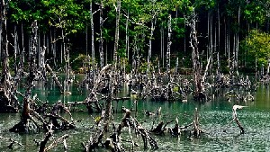 |
 bucɔʈɔŋ1 बूचौटौङ MORPH: bucɔ-ʈɔŋ. N सं. mangrove area (named metonymically after mangrove tree); खाड़ी पेड़ का क्षेत्र. SD: flora, फूल-पत्ती. SEE: bucɔʈɔŋ2 ‘mangrove root’ ‘खाड़ी पेड़ की जड़ बूचौटौङhm:{2}’.
bucɔʈɔŋ1 बूचौटौङ MORPH: bucɔ-ʈɔŋ. N सं. mangrove area (named metonymically after mangrove tree); खाड़ी पेड़ का क्षेत्र. SD: flora, फूल-पत्ती. SEE: bucɔʈɔŋ2 ‘mangrove root’ ‘खाड़ी पेड़ की जड़ बूचौटौङhm:{2}’.
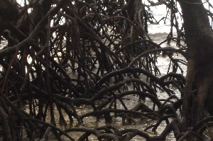 |
 bucɔʈɔŋ2 बूचौटौङ MORPH: bucɔ-ʈɔŋ. N सं. mangrove root; खाड़ी पेड़ की जड़. SD: flora, फूल-पत्ती. SEE: bucɔʈɔŋ1 ‘mangrove area’ ‘खाड़ी पेड़ का क्षेत्र बूचौटौङhm:{1}’.
bucɔʈɔŋ2 बूचौटौङ MORPH: bucɔ-ʈɔŋ. N सं. mangrove root; खाड़ी पेड़ की जड़. SD: flora, फूल-पत्ती. SEE: bucɔʈɔŋ1 ‘mangrove area’ ‘खाड़ी पेड़ का क्षेत्र बूचौटौङhm:{1}’.
buːrɑm बूऽराम N सं. creeper; एक प्रकार की लता. SD: flora, फूल-पत्ती.
buːrbɑːlɔ बूऽरबाऽलौ MORPH: buːr-bɑːlɔ. N सं. creeper; लता. SD: flora, फूल-पत्ती.
buʈipɑtti बूटीपात्ती MORPH: buʈi-pɑtti. Etym: Hindi; हिन्दी. N सं. special leaf used as a coagulant; ख़ून बंद करने में सहायक पत्ता. SD: flora, फूल-पत्ती, medicine, औषधी.
 |
cɑc चाच N सं. a kind of tree; एक प्रकार का पेड़. Sterculia-foetida-feuilles. SD: flora, फूल-पत्ती. NT: Causes itching when touched. Bears red fruit. फल देने वाला पेड़ जिसको छूने से खुजली होती है।.
cɑeʈɔʈcɔ चाएटौटचौ MORPH: cɑe-ʈɔʈ-cɔ. N सं. rotten fruit, used as a ball for playing; सड़ा हुआ फल जो गेंद की तरह खेलने के काम आता है. SD: flora, फूल-पत्ती.
cɑːlɔ चाऽलौ N सं. grass; घास. SD: flora, फूल-पत्ती.
cɑːlɔte चाऽलौते N सं. a kind of tree; एक प्रकार का पेड़. SD: flora, फूल-पत्ती.
cɑrɑp चाराप Etym: Bea; बेया. VAR: cɑrɑpɑ चारापा. N सं. a kind of flower; एक प्रकार का फूल. SD: flora, फूल-पत्ती. NT: The flower is associated with the period of September, October and the first half of November, which is when it blooms. Blooming of this flower indicates the onset of winter. इस फूल का खिलना जाड़े के आगमन का द्योतक है। सितंबर, अक्तूबर और मध्य नवम्बर तक का काल।.
 |
cɑrɑšilu चाराशीलू N सं. a kind of tree; एक प्रकार का पेड़. SD: flora, फूल-पत्ती.
 |
 cɑrʈɔŋ1 चारतौङ VAR: cɑr-tɔŋ चारटौङ. N सं. mangrove; खाड़ी पेड़. SD: flora, फूल-पत्ती. SEE: cɑrʈɔŋ2 ‘sides of creek’ ‘किनारे, खाड़ी के चारटौङhm:{2}’.
cɑrʈɔŋ1 चारतौङ VAR: cɑr-tɔŋ चारटौङ. N सं. mangrove; खाड़ी पेड़. SD: flora, फूल-पत्ती. SEE: cɑrʈɔŋ2 ‘sides of creek’ ‘किनारे, खाड़ी के चारटौङhm:{2}’.
 |
cɑʈɑle चाटाले VAR: ceʈɑle चेटाले. N सं. a kind of tree found near the seashore; समुद्र के किनारे पाया जाने वाला पेड़. SD: flora, फूल-पत्ती. NT: The fruit of this tree is believed to be dangerous to eat as it can lead to an increase in the size of the head. ऐसा माना जाता है कि इस पेड़ के फल खाने से सिर बड़े आकार का हो जाता है। घातक पेड़।.
celɑcno चेलाच्नो N सं. a kind of plant; एक प्रकार का पौधा. SD: flora, फूल-पत्ती.
celebi चेलेबी Etym: Jeru; जेरू. VAR: clilipɑ च्लीलीपा. Etym: Bea; बेया. N सं. a kind of flower; एक प्रकार का फूल. SD: flora, फूल-पत्ती. NT: It blooms between mid-November and mid-February. इस फूल का खिलने का समय मध्य नवम्बर से मध्य फरवरी है। शीत ऋतु से सम्बंधित।.
celmo1 चेलमो N सं. a kind of flower which is used during song and dance; एक प्रकार का फूल जो गाने व नाचने के प्रयोग में आता है. SD: flora, फूल-पत्ती. SEE: celmo2 ‘tree’ ‘पेड़ चेलमोhm:{2}’.
celmo2 चेलमो N सं. tree; पेड़. SD: flora, फूल-पत्ती. NT: Wood used for carving. इसकी लकड़ी नक्काशी के काम में आती है।. SEE: celmo1 ‘flower’ ‘फूल चेलमोhm:{1}’.
cemeʈɛc चेमेटैच N सं. a kind of grass with sharp blades; एक प्रकार की तेज़ धार वाली घास. SD: flora, फूल-पत्ती.
cenɑːk चेनाऽक N सं. a kind of tree; एक प्रकार का पेड़. SD: flora, फूल-पत्ती.
 |
cenɑr चेनार N सं. a kind of tree found near the seashore; समुद्र किनारे पाया जाने वाला पेड़. SD: flora, फूल-पत्ती.
cerɑlo चेरालो MORPH: cer-ɑlo. N सं. roots of tree in the creeks; खाड़ी पेड़ की जड़. SD: flora, फूल-पत्ती.
cereːm चेरेऽम N सं. a kind of tree; एक प्रकार का पेड़. SD: flora, फूल-पत्ती.
ceʈʈɑːle चेट्टाऽले N सं. a kind of fruit; एक प्रकार का फल. SD: flora, फूल-पत्ती.
cɛlecɛcmo चैलेचैच्मो N सं. bush; झाड़ी. SD: flora, फूल-पत्ती.
 cɛp चैप VAR: cɛp-ʈoŋ चैपटौङ. N सं. mangrove tree with soft thorns on the roots; जड़ पर हल्के कांटों वाला खाड़ी पेड़. SD: flora, फूल-पत्ती.
cɛp चैप VAR: cɛp-ʈoŋ चैपटौङ. N सं. mangrove tree with soft thorns on the roots; जड़ पर हल्के कांटों वाला खाड़ी पेड़. SD: flora, फूल-पत्ती.
 cɛptɑrɑbucu चैपताराबूचू MORPH: cɛp-tɑrɑ-bucu. N सं. roots, of the mangrove; खाड़ी पेड़ की जड़. SD: flora, फूल-पत्ती.
cɛptɑrɑbucu चैपताराबूचू MORPH: cɛp-tɑrɑ-bucu. N सं. roots, of the mangrove; खाड़ी पेड़ की जड़. SD: flora, फूल-पत्ती.
cilo चीलो N सं. a big tree that looks like a palm tree and is found in the deep jungle; एक विशाल ताड़ जैसा पेड़ जो जंगल के अंदर पाया जाता है. SD: flora, फूल-पत्ती.
cimi चीमी VAR: simi सीमी. Etym: North Andaman; उत्तरी अण्डमान. N सं. tall mangrove tree used as firewood; mangrove seed; ऊंचा वनस्पति पेड़ जो ईंधन के काम आता है; वनस्पति बीज. SD: flora, फूल-पत्ती.
 |
cinɑr चीनार N सं. a kind of plant; एक प्रकार का पौधा. Dipterocarpus. SD: flora, फूल-पत्ती.
 |
coː चोऽ N सं. beans; फली. SD: flora, फूल-पत्ती.
 coboŋ चोबोङ N सं. land with an abundance of bushes; big forest; grass; झाड़ियों का क्षेत्र; जंगल; घास. SD: flora, फूल-पत्ती.
coboŋ चोबोङ N सं. land with an abundance of bushes; big forest; grass; झाड़ियों का क्षेत्र; जंगल; घास. SD: flora, फूल-पत्ती.
 |
comtɛc चोम्तैच MORPH: com-tɛc. N सं. betelnut leaf; सुपारी का पत्ता. SD: flora, फूल-पत्ती.
comulu चोमूलू N सं. a kind of tree; एक प्रकार का पेड़. SD: flora, फूल-पत्ती. NT: Found on shores. Its fruit is sour. खट्टे फल वाला पेड़ जो समुद्र के किनारे पाया जाता है।.
coːŋofor चोऽङोफ़ोर N सं. forest, dense; घना जंगल. SD: flora, फूल-पत्ती.
coroŋ चोरोङ VAR: coroŋo चोरोङो. Etym: North Andaman; उत्तरी अण्डमान. N सं. a kind of bitter fruit; एक प्रकार का कड़वा फल. SD: flora, फूल-पत्ती.
coːy चोऽय N सं. a kind of tree; एक प्रकार का पेड़. SD: flora, फूल-पत्ती.
cʰoyetɛc छोयेतैच MORPH: cʰoye-tɛc. N सं. leaf used to wrap fish for roasting; पत्ता जो मछली को लपेटकर भूनने में प्रयोग होता है. SD: flora, फूल-पत्ती, cooking & food, खाना-पीना.
cɔːe चौऽए N सं. a kind of tree; एक प्रकार का पेड़. SD: flora, फूल-पत्ती.
cɔkʰɔro चौखौरो VAR: cokoro चोकोरो. Etym: Jeru; जेरू. VAR: cɑɡɑrɑ चागारा. Etym: Bea; बेया. N सं. a big wild flower that blooms once a year; एक प्रकार का बड़ा जंगली फूल जो वर्ष में एक बार खिलता है. SD: flora, फूल-पत्ती. NT: Its blooming is associated with the period between mid-May and August-end. Indicator of the rainy season. इस फूल का खिलना मध्य मई से अगस्त के अंत के समय से जुड़ा है। बरसात का समय।.
cɔkʰɔroʈɔlo2 चौखौरोटौलो MORPH: cɔkʰɔ-ro-ʈɔlo. N सं. Parak flower; पड़ाक का फूल. SD: flora, फूल-पत्ती. NT: Bloom indicates the beginning of the rainy season. This is associated with the period when pigs have maximum fat. So it is the best time to hunt pig. वर्षा ऋतु के आगमन का प्रतीक। पड़ाक के फूलते ही सूअरों का शिकार किया जाता है क्योंकि यही वह समय है जब सूअर में सबसे ज़्यादा चर्बी पाई जाती है।. SEE: cɔkʰɔroʈɔlo1 ‘hail’ ‘ओले चौखौरोटौलोhm:{1}’.
 cɔlekʰi चौलेखी MORPH: cɔle-kʰi. VAR: cɔle-kʰe चौलेखे; cɔlexe चौलेखे; colɛse चोलैसे. N सं. Parak tree; पड़ाक पेड़. SD: flora, फूल-पत्ती. NT: An endemic tree the wood of which is known to last long and, hence, is used for making boats and doors. विशेष अण्डमानी पेड़ जो अपनी मजबूती और टिकाऊ होने के कारण नाव और दरवाज़ा बनाने के काम आता है।.
cɔlekʰi चौलेखी MORPH: cɔle-kʰi. VAR: cɔle-kʰe चौलेखे; cɔlexe चौलेखे; colɛse चोलैसे. N सं. Parak tree; पड़ाक पेड़. SD: flora, फूल-पत्ती. NT: An endemic tree the wood of which is known to last long and, hence, is used for making boats and doors. विशेष अण्डमानी पेड़ जो अपनी मजबूती और टिकाऊ होने के कारण नाव और दरवाज़ा बनाने के काम आता है।.
cɔlɛːmɔ चौलैऽमौ N सं. a kind of tree; एक प्रकार का पेड़. SD: flora, फूल-पत्ती.
 |
 cɔm2 चौम VAR: ̘com चोम. N सं. betelnut; सुपारी. SD: edible item, खाद्य सामग्री, flora, फूल-पत्ती. SEE: cɔm1 ‘basket’ ‘टोकरी चौमhm:{1}’; cɔm3 ‘pointed object, any’ ‘नुकीला औज़ार, कोई भी चौमhm:{3}’; cɔm4 ‘shark, small’ ‘शार्क, छोटी चौमhm:{4}’; cɔm5 ‘stick, wooden’ ‘छड़, लकड़ी की चौमhm:{5}’; cɔm6 ‘tree’ ‘पेड़ चौमhm:{6}’.
cɔm2 चौम VAR: ̘com चोम. N सं. betelnut; सुपारी. SD: edible item, खाद्य सामग्री, flora, फूल-पत्ती. SEE: cɔm1 ‘basket’ ‘टोकरी चौमhm:{1}’; cɔm3 ‘pointed object, any’ ‘नुकीला औज़ार, कोई भी चौमhm:{3}’; cɔm4 ‘shark, small’ ‘शार्क, छोटी चौमhm:{4}’; cɔm5 ‘stick, wooden’ ‘छड़, लकड़ी की चौमhm:{5}’; cɔm6 ‘tree’ ‘पेड़ चौमhm:{6}’.
 cɔm6 चौम N सं. mangrove tree; खाड़ी पेड़. SD: flora, फूल-पत्ती. SEE: cɔm1 ‘basket’ ‘टोकरी चौमhm:{1}’; cɔm2 ‘betelnut’ ‘सुपारी चौमhm:{2}’; cɔm3 ‘pointed object, any’ ‘नुकीला औज़ार, कोई भी चौमhm:{3}’; cɔm4 ‘shark, small’ ‘शार्क, छोटी चौमhm:{4}’; cɔm5 ‘stick, wooden’ ‘छड़, लकड़ी की चौमhm:{5}’.
cɔm6 चौम N सं. mangrove tree; खाड़ी पेड़. SD: flora, फूल-पत्ती. SEE: cɔm1 ‘basket’ ‘टोकरी चौमhm:{1}’; cɔm2 ‘betelnut’ ‘सुपारी चौमhm:{2}’; cɔm3 ‘pointed object, any’ ‘नुकीला औज़ार, कोई भी चौमhm:{3}’; cɔm4 ‘shark, small’ ‘शार्क, छोटी चौमhm:{4}’; cɔm5 ‘stick, wooden’ ‘छड़, लकड़ी की चौमhm:{5}’.
 |
cɔmʈɔŋ चौमटौङ MORPH: cɔm-ʈɔŋ. N सं. betelnut tree; सुपारी का पेड़. SD: flora, फूल-पत्ती.
cɔŋ चौङ VAR: cɔːŋɔ चौऽङौ. N सं. bush; झाड़ी. SD: flora, फूल-पत्ती.
 cɔp3 चौप VAR: cop चोप. N सं. a kind of tree; बादाम पेड़. SD: flora, फूल-पत्ती. SEE: cɔp1 ‘fish’ ‘मछली चौपhm:{1}’; cɔp2 ‘fish’ ‘मछली चौपhm:{2}’; cɔp4 ‘weight’ ‘वज़न चौपhm:{4}’.
cɔp3 चौप VAR: cop चोप. N सं. a kind of tree; बादाम पेड़. SD: flora, फूल-पत्ती. SEE: cɔp1 ‘fish’ ‘मछली चौपhm:{1}’; cɔp2 ‘fish’ ‘मछली चौपhm:{2}’; cɔp4 ‘weight’ ‘वज़न चौपhm:{4}’.
cɔrɔ चौरौ N सं. a kind of tree; एक प्रकार का पेड़. SD: flora, फूल-पत्ती. NT: The leaves of this tree are crushed and the juice drunk in case of malaria or injury. मलेरिया होने पर या चोट लगने पर इस पेड़ की पत्तियों को मसलकर उसका रस औषधी के रूप में पिया जाता है।.
cuɡotɔ चूगोतौ Etym: Jeru; जेरू. N सं. mushroom; कुकुरमुत्ता. SD: flora, फूल-पत्ती. SEE: doɡotɑ ‘mimusops’ ‘कुकुरमुत्ता दोगोता ’.
culemo चूलेमो VAR: culɛmo चूलैमो. N सं. berry; बेरी फल. ŋu-ʈʰi culɛmo-bi tɛše pʰu-tɛš-ɑmo ʈʰu-ŋol-o-bom ङूठी चूलैमोबी तैशे फूतैशामो ठूङोलोबोम. If you do not give me the berries, I will cry. अगर तुम मुझे बेर नहीं दोगे तो मैं रो पड़ूंगा।. SD: flora, फूल-पत्ती, edible fruit, खाद्य फल.
doɡotɑ दोगोता Etym: Bea; बेया. N सं. mushroom; कुकुरमुत्ता. SD: flora, फूल-पत्ती. SEE: cuɡotɔ ‘mushroom’ ‘कुकुरमुत्ता चूगोतौ ’.
ɖelɔ डेलौ N सं. a kind of tree used for making boats; एक प्रकार का पेड़ जो डोंगी बनाने के काम आता है. SD: flora, फूल-पत्ती.
ɖikʰili डीखीली N सं. sugarcane; गन्ना. SD: flora, फूल-पत्ती, edible item, खाद्य सामग्री.
ɖumto डूमतो N सं. a kind of tree; एक प्रकार का पेड़. SD: flora, फूल-पत्ती.
ɖup डूप N सं. Jingam tree; जिंगम पेड़. SD: flora, फूल-पत्ती. NT: A kind of tree used for making canoes, the dongi. डोंगी बनाने में प्रयुक्त।.
ebɑlɔ एबालौ VAR: ebɑːllɔ एबाऽल्लौ. N सं. a kind of creeper; एक प्रकार की लता. SD: flora, फूल-पत्ती. NT: Its fibre is used for making bowstrings. धनुष की कमान बनाने में प्रयुक्त।.
ebuʈko एबूटको N सं. root, protruded; बाहर उभरी हुई जड़. SD: flora, फूल-पत्ती.
eccoːʈkɔ एच्चोऽट्कौ N सं. root (big); जड़ (बड़ी). SD: flora, फूल-पत्ती.
efɑːe एफाऽए N सं. hard dry (leaf); कड़क सूखा (पत्ता). SD: flora, फूल-पत्ती.
 |
eiŋšoŋo एईनशोङो MORPH: ei-iŋ-šoŋo. Etym: Bo; बो. N सं. white flesh of a coconut; नारियल की मलाई/गूदा. SD: flora, फूल-पत्ती.
 ekɑbec एकाबेच MORPH: ekɑ-bec. N सं. treetop; पेड़ की चोटी. SD: flora, फूल-पत्ती.
ekɑbec एकाबेच MORPH: ekɑ-bec. N सं. treetop; पेड़ की चोटी. SD: flora, फूल-पत्ती.
 |
 ekɑjirɑ एकाजीरा N सं. chilli; मिर्च. torɔm ekɑjirɑ cɔkbitʰomo inol etɛše तोरौम एकाजीरा चौक्बीथोमो ईनोल एतैशे. Put salt, chilli and turtle flesh in water. नमक, मिर्च और कछुए का मांस पानी में डालो।. SD: flora, फूल-पत्ती.
ekɑjirɑ एकाजीरा N सं. chilli; मिर्च. torɔm ekɑjirɑ cɔkbitʰomo inol etɛše तोरौम एकाजीरा चौक्बीथोमो ईनोल एतैशे. Put salt, chilli and turtle flesh in water. नमक, मिर्च और कछुए का मांस पानी में डालो।. SD: flora, फूल-पत्ती.
 ekɑtʰire एकाथीरे MORPH: ekɑ-tʰire. VAR: ekɑ-ʈʰire एकाठीरे. N सं. new tender leaves; कोंपलें. SD: flora, फूल-पत्ती.
ekɑtʰire एकाथीरे MORPH: ekɑ-tʰire. VAR: ekɑ-ʈʰire एकाठीरे. N सं. new tender leaves; कोंपलें. SD: flora, फूल-पत्ती.
ekɑʈʰire एकाठीरे N सं. stem of tree; पेड़ का तना. SD: flora, फूल-पत्ती.
ekkɑːtʰilːrɛ एक्काऽथीलऽरै VAR: exɑːtʰiːre एखाऽथीऽरे. N सं. tender leaf; मुलायम पत्ता. SD: flora, फूल-पत्ती.
ekkɔʈɔːy एक्कौटचौऽय MORPH: ekkɔ-ʈɔːy. N सं. node; केंद्र. SD: flora, फूल-पत्ती.
ekoːɖumtɛc एकोऽडूमतैच MORPH: ekoːɖum-tɛc. N सं. leaf, big; बड़ा पत्ता. SD: flora, फूल-पत्ती.
ekɔrɔbo एकौरौबो N सं. leaves, dry enough to make a crackling sound when walked upon; पूरी तरह से सूखे पत्ते, इतने सूखे कि चलने पर चर्र-चर्र करें. SD: flora, फूल-पत्ती.
ekʰɔʈɔe एखौटौए N सं. trunk; stem (big) of leaves; तना; पत्तियों की बड़ी डंठल. SD: flora, फूल-पत्ती.
 |
eletɛc एलेतैच MORPH: ele-tɛc. N सं. a kind of leaf; एक प्रकार का पत्ता. SD: flora, फूल-पत्ती. NT: These leaves are used as a plate for serving food and also as a mosquito repellent. इन पत्तों को थालियों की तरह प्रयोग किया जाता है। मच्छरों को भगाने के लिए भी प्रयोग किया जाता है।.
eliuʈɔlɔ एलीऊटौलौ MORPH: eliu-ʈɔlɔ. N सं. a kind of flower; एक प्रकार का फूल. SD: flora, फूल-पत्ती.
 elortoʈoŋ एलोरतोटोङ MORPH: elorto-ʈoŋ. N सं. straight tree; सीधा पेड़. SD: flora, फूल-पत्ती.
elortoʈoŋ एलोरतोटोङ MORPH: elorto-ʈoŋ. N सं. straight tree; सीधा पेड़. SD: flora, फूल-पत्ती.
emyoːy1 एम्योऽय N सं. lemon tree; नींबू का पेड़. SD: flora, फूल-पत्ती. SEE: emyoːy2 ‘sour in taste’ ‘खट्टा, स्वाद में एम्योऽयhm:{2}’.
 eːn एऽन N सं. leaf of a bushy plant; एक तरह की झाड़ी का पत्ता. SD: flora, फूल-पत्ती, hunting & gathering, शिकार एवं संचय सम्बंधी. NT: These leaves are strewn in the water to make fish senseless. Many of these bushes were destroyed in the tsunami. इस पत्ते का चूरा पानी में डाला जाता है जिससे मछलियां बेहोश होकर ऊपर तैर आती हैं। सूनामी में एऽन की झाड़ियों को काफ़ी नुकसान पहुंचा।. SEE: jin ‘tree’ ‘पेड़ जीन ’.
eːn एऽन N सं. leaf of a bushy plant; एक तरह की झाड़ी का पत्ता. SD: flora, फूल-पत्ती, hunting & gathering, शिकार एवं संचय सम्बंधी. NT: These leaves are strewn in the water to make fish senseless. Many of these bushes were destroyed in the tsunami. इस पत्ते का चूरा पानी में डाला जाता है जिससे मछलियां बेहोश होकर ऊपर तैर आती हैं। सूनामी में एऽन की झाड़ियों को काफ़ी नुकसान पहुंचा।. SEE: jin ‘tree’ ‘पेड़ जीन ’.
 eɔrɔ एऔरौ N सं. tender leaves; buds; कोंपलें; कली. SD: flora, फूल-पत्ती.
eɔrɔ एऔरौ N सं. tender leaves; buds; कोंपलें; कली. SD: flora, फूल-पत्ती.
 |
 epʰɑetɛc एफाएतैच MORPH: e-pʰɑy-tɛc. VAR: e-fɑe-tɛc एफाएतैच. N सं. leaf, dry; सूखा पत्ता. SD: flora, फूल-पत्ती.
epʰɑetɛc एफाएतैच MORPH: e-pʰɑy-tɛc. VAR: e-fɑe-tɛc एफाएतैच. N सं. leaf, dry; सूखा पत्ता. SD: flora, फूल-पत्ती.
er एर N सं. a kind of creeper; एक प्रकार की लता. SD: flora, फूल-पत्ती.
 erɑcɛʈʰo एराचैठो MORPH: erɑcɛʈʰo. N सं. root, of the tree; पेड़ की जड़. SD: flora, फूल-पत्ती.
erɑcɛʈʰo एराचैठो MORPH: erɑcɛʈʰo. N सं. root, of the tree; पेड़ की जड़. SD: flora, फूल-पत्ती.
erɑʈ एराट VAR: erɑːʈ एराऽट. N सं. wings of a bird; feather of a hen; पक्षी का पंख; मुर्गी के पंख. SD: flora, फूल-पत्ती.
 erop एरोप VAR: erɔːp एरौऽप; eroːp एरोऽप. N सं. dead (tree); मरा (पेड़).
erop एरोप VAR: erɔːp एरौऽप; eroːp एरोऽप. N सं. dead (tree); मरा (पेड़).
ADJ वि. decayed; rotten; सड़ा हुआ. SD: flora, फूल-पत्ती.
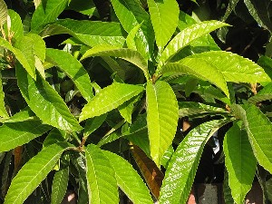 |
 ertɛc एरतैच MORPH: er-tɛc. N सं. leaf; पत्ता. SD: flora, फूल-पत्ती.
ertɛc एरतैच MORPH: er-tɛc. N सं. leaf; पत्ता. SD: flora, फूल-पत्ती.
 erʈoeʈoŋ एर्टोएटोङ MORPH: erʈoe-ʈoŋ. N सं. trunk, of a tree; पेड़ का तना. SD: flora, फूल-पत्ती.
erʈoeʈoŋ एर्टोएटोङ MORPH: erʈoe-ʈoŋ. N सं. trunk, of a tree; पेड़ का तना. SD: flora, फूल-पत्ती.
erʈɔːylɛbuŋ एरटौऽयलैबूङ N सं. root; जड़. SD: flora, फूल-पत्ती.
etcoɖo एत्चोडो MORPH: etco-ɖo. N सं. unripe fruit; कच्चा फल. SD: flora, फूल-पत्ती.
etkɔbo1 एत्कौबो VAR: etkɔwbo एतकौवबो. N सं. bark (of tree); (पेड़ की) छाल. SD: flora, फूल-पत्ती. SEE: etkɔbo2 ‘shell’ ‘सीपी एत्कौबोhm:{2}’; etkɔbo3 ‘skin’ ‘खाल एत्कौबोhm:{3}’.
eʈɑkɔpʰɔ एटाकौफौ MORPH: eʈɑ-kɔpʰɔ. Etym: Bo; बो. N सं. cluster of coconut trees; नारियल के पेड़ों का झुंड. SD: flora, फूल-पत्ती.
eʈce एटचे MORPH: eʈ-ce. VAR: cɛ चै; uc-cɛ ऊच्चै. N सं. thorn; कांटा. SD: flora, फूल-पत्ती.
eulu एऊलू VAR: ewlu एवलू. N सं. seed inside the fruits; kernel of fruit; फल के अंदर के बीज; फल का मुख्य भाग. SD: flora, फूल-पत्ती, edible item, खाद्य सामग्री.
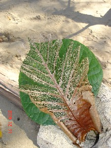 |
exoʈɔy एखोटौय VAR: exoʈɔːy एखोटौऽय. N सं. veins, on a leaf; पत्ते की नसें. SD: flora, फूल-पत्ती.
ɛββeo ऐब्बेओ N सं. a variety of bamboo; एक प्रकार का बांस. SD: flora, फूल-पत्ती.
ɛkɑilɑbom ऐकाईलाबोम MORPH: ɛkɑ-ilɑ-bom. N सं. petals; पंखुड़ी. SD: flora, फूल-पत्ती.
 ɛpʰor ऐफोर MORPH: ɛ-pʰor. N सं. fallen tree; गिरा हुआ पेड़. SD: flora, फूल-पत्ती.
ɛpʰor ऐफोर MORPH: ɛ-pʰor. N सं. fallen tree; गिरा हुआ पेड़. SD: flora, फूल-पत्ती.
ɛrliu ऐरलीऊ MORPH: ɛr-liu. N सं. bark; छाल. ʈʰɛrliu ठैरलीऊ. my bark. मेरी छाल. SD: flora, फूल-पत्ती.
ɛrɔne ऐरौने N सं. coral flower; मूंगा या मोती का फूल. SD: flora, फूल-पत्ती.
 ɛrteccerel ऐरतेच्चेरेल MORPH: ɛr-tec-cerel. N सं. green leaf; हरा पत्ता. SD: flora, फूल-पत्ती.
ɛrteccerel ऐरतेच्चेरेल MORPH: ɛr-tec-cerel. N सं. green leaf; हरा पत्ता. SD: flora, फूल-पत्ती.
 ɛrteccɔpʰe ऐरतेच्चौफे MORPH: ɛr-tec-cɔpʰe. N सं. leaves, many; ढेर सारे पत्ते. SD: flora, फूल-पत्ती.
ɛrteccɔpʰe ऐरतेच्चौफे MORPH: ɛr-tec-cɔpʰe. N सं. leaves, many; ढेर सारे पत्ते. SD: flora, फूल-पत्ती.
ɛteckɔʈɔŋ ऐतेच्कौटौङ MORPH: ɛ-tec-kɔʈɔŋ. N सं. dry leaf; सूखा पत्ता. SD: flora, फूल-पत्ती.
ɛʈʰolo ऐठोलो N सं. straight portion of the tree; पेड़ का सीधा भाग. SD: flora, फूल-पत्ती.
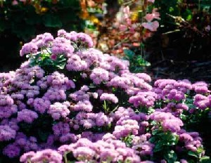 |
ɛʈɔlo ऐटौलो MORPH: ɛ-ʈɔlo. N सं. a kind of flower; एक तरह का फूल. SD: flora, फूल-पत्ती.
ɛʈɔŋcɔfe ऐटौङचौफे MORPH: ɛ-ʈɔŋ-cɔfe. N सं. cluster of trees; पेड़ों का समूह. SD: flora, फूल-पत्ती.
ɛʈɔy ऐटौय MORPH: ɛ-ʈɔy. VAR: ot-cɑn ओत्चान; ɛ-tɔŋ ऐतौङ. N सं. stem; तना. SD: flora, फूल-पत्ती.
ɛʈʈole ऐट्टोले MORPH: ɛʈ-ʈole. N सं. wood; लकड़ी. SD: flora, फूल-पत्ती.
ɛyco ऐयचो N सं. a kind of green coconut; एक प्रकार का हरा नारियल. SD: flora, फूल-पत्ती.
fɑl1 फाल N सं. leaf; पत्ता. SD: flora, फूल-पत्ती. SEE: fɑl2 ‘wave’ ‘लहर फालhm:{2}’.
ferko फेरको N सं. mango tree; आम का पेड़. SD: flora, फूल-पत्ती.
filuk फीलूक N सं. a kind of tree; एक प्रकार का पेड़. SD: flora, फूल-पत्ती.
foːccow फोऽच्चोव N सं. Tipok tree; तिपोक का पेड़. SD: flora, फूल-पत्ती. NT: The soft wood of this tree is used for making boats. इसकी मुलायम लकड़ी नाव बनाने के काम आती है।.
fɔrʈo फौरटो N सं. a kind of long bamboo; एक प्रकार का लम्बा बांस. SD: flora, फूल-पत्ती.
fuɖoʈɔŋ फूडोटौङ MORPH: fuɖo-ʈɔŋ. N सं. mangrove tree; खाड़ी पेड़. SD: flora, फूल-पत्ती.
fulicmo फूलीच्मो VAR: fulicmobɑːllɔ फूलीचमोबाऽल्लौ. N सं. a kind of creeper; एक प्रकार की लता. SD: flora, फूल-पत्ती.
ɸorɑŋo फोराङो N सं. wood; लकड़ी. SD: flora, फूल-पत्ती.
ɡolɑʈ गोलाट MORPH: ɡol-ɑʈ. Etym: Pujjukar; पुज्जूकर. N सं. wood (rotten); लकड़ी (सड़ी हुई). SD: flora, फूल-पत्ती.
ietɑrɑfir ईएताराफीर MORPH: ie-tɑrɑ-fir. N सं. a kind of thin cane; एक प्रकार का पतला बेंत जो मचान बनाने के काम आता है. SD: flora, फूल-पत्ती. NT: This cane is used for making platforms.
 |
iku ईकू N सं. a kind of plant; एक प्रकार का पौधा. SD: flora, फूल-पत्ती. NT: The roots and twigs of this plant are used for making belts on which shells are sewn to make jewellery. इस पौधे की टहनियां और जड़ें करधनी की रस्सी बनाने के काम में आती हैं।.
 ikʰu ईखू N सं. yellow outgrowth (of a big tree); कल्ले फूटना. SD: flora, फूल-पत्ती. SEE: ɛkɔpʰo ‘sprout of leaves on a tree’ ‘कल्ले निकलना ऐकौफो ’.
ikʰu ईखू N सं. yellow outgrowth (of a big tree); कल्ले फूटना. SD: flora, फूल-पत्ती. SEE: ɛkɔpʰo ‘sprout of leaves on a tree’ ‘कल्ले निकलना ऐकौफो ’.
ikʰui ईखूई MORPH: i-kʰui. N सं. leaf; कच्चा पत्ता. SD: flora, फूल-पत्ती.
ikʰuʈɔlo ईखूटौलो MORPH: ikʰu-ʈɔlo. N सं. a kind of flower; एक तरह का फूल. SD: flora, फूल-पत्ती.
 |
ile ईले N सं. a kind of leaf; एक प्रकार का पत्ता. SD: flora, फूल-पत्ती.
 |
ilʈoŋ ईलटोङ N सं. a kind of tree that bears brown fruit which is used as a dye; एक प्रकार का पेड़ जिसमें भूरे रंग का फल होता है जो रंगने के काम आता है. SD: flora, फूल-पत्ती.
immixolo ईम्मीखोलो N सं. inside of the bark of a tree; पेड़ की भीतरी छाल. SD: flora, फूल-पत्ती.
 imulu2 ईमूलू MORPH: i-mulu. N सं. seed; बीज. SD: flora, फूल-पत्ती. SEE: imulu1 ‘egg’ ‘अंडा ईमूलूhm:{1}’.
imulu2 ईमूलू MORPH: i-mulu. N सं. seed; बीज. SD: flora, फूल-पत्ती. SEE: imulu1 ‘egg’ ‘अंडा ईमूलूhm:{1}’.
 itec ईतेच MORPH: i-tec. N सं. leaf; पत्ता. SD: flora, फूल-पत्ती.
itec ईतेच MORPH: i-tec. N सं. leaf; पत्ता. SD: flora, फूल-पत्ती.
jeroʈɔŋ जेरोटौङ MORPH: jero-ʈɔŋ. N सं. wild papaya tree; जंगली पपीते का पेड़. SD: flora, फूल-पत्ती. NT: This tree is used for making canoes, the dongi. डोंगी बनाने के काम में आता है।.
jeru जेरू Etym: Jeru; जेरू. VAR: yere येरे. Etym: Bea; बेया. N सं. a kind of flower; एक प्रकार का फूल. SD: flora, फूल-पत्ती. NT: It blooms between mid-February and mid-May and is also a sign of spring. One Great Andamanese person’s (Jeru) name is based on this flower. The name of the current language ‘Jero’ or ‘Jeru’ draws its name from the name of this flower. यह फूल बसन्त ऋतु का द्योतक है क्योंकि मध्य फरवरी से मध्य मई तक फूलता है। आदिवासी ‘जेरू’ का नाम इसी फूल पर पड़ा है। ‘जेरू’ या ‘जेरो’ भाषा का नाम भी इसी फूल पर पड़ा है।.
jetɑrɑpʰil जेताराफील N सं. a kind of creeper used for making wine; एक प्रकार की लता जिसका प्रयोग शराब बनाने में किया जाता है. SD: flora, फूल-पत्ती.
jidɡɑ जीद्गा N सं. a kind of flower; एक प्रकार का फूल. SD: flora, फूल-पत्ती. NT: It signifies the onset of spring because it blooms between mid-February and mid-May. यह फूल बसन्त ऋतु का द्योतक है क्योंकि मध्य फरवरी से मध्य मई तक फूलता है।.
jili1 जीली Etym: Jeru; जेरू. VAR: jilli जील्ली; yulu यूलू. Etym: Bea; बेया. N सं. a kind of flower; एक प्रकार का फूल. SD: flora, फूल-पत्ती. NT: It blooms in September, October and the first half of November. Blossoming of this flower also signifies the arrival of winter with intense sunshine. यह फूल जाड़े के आगमन का द्योतक है और मध्य सितंबर से मध्य नवम्बर तक खिलता है। इस फूल का खिलना चिलचिलाती धूप के आगमन का भी संदेश देता है।. SEE: jili2 ‘sea-shell’ ‘समुद्री सीपी जीलीhm:{2}’.
jilliɔrɔ1 जील्लीऔरौ MORPH: jilli-ɔrɔ. N सं. a kind of flower; एक प्रकार का फूल. SD: flora, फूल-पत्ती. SEE: jilliɔrɔ2 ‘scorching heat of sunshine; onset of summer’ ‘चिलचिलाती धूप; गर्मियों की शुरुआत जील्लीऔरौhm:{2}’.
.jpg) |
jin जीन N सं. mangrove tree; खाड़ी पेड़. SD: flora, फूल-पत्ती. SEE: en ‘leaf’ ‘पत्ता एन ’.
 |
jinʈɛc जीन्टैच MORPH: jin-ʈɛc. N सं. leaf of Jin tree; जीन पेड़ का पत्ता. SD: flora, फूल-पत्ती. NT: These leaves are rubbed on the breasts of mothers to induce lactation. जच्चा के स्तनों पर इस पत्ती को मसलकर लेप करने से दूध उतर आता है।. SEE: jin ‘tree’ ‘पेड़ जीन ’.
 |
jirɑbɑlo जीराबालो MORPH: jirɑ-bɑlo. VAR: jiro-bɑlo जीरोबालो. N सं. a kind of creeper that induces rashes and itching when touched; एक प्रकार की खुजली करने वाली लता. SD: flora, फूल-पत्ती. NT: It is believed that when this creeper is put in the sea, it calms the sea and the winds. ऐसा माना जाता है कि समुद्र में इस लता को डालने से समुद्र और हवा का वेग कम हो जाता है।.
kɑbɑ1 काबा Etym: Bo; बो. N सं. a kind of creeper; एक प्रकार की लता. SD: flora, फूल-पत्ती. SEE: kɑbɑ2 ‘fruit’ ‘फल काबाhm:{2}’.
kɑbɑl काबाल Etym: North Andaman; उत्तरी अण्डमान. N सं. mangrove tree; mangrove seed; खाड़ी पेड़; खाड़ी पेड़ का बीज. SD: flora, फूल-पत्ती. NT: A small-sized tree with edible sweet fruit that is boiled before being eaten. छोटे आकार का खाड़ी पेड़ जिसके फल उबालकर खाए जाते हैं।.
kɑo काओ Etym: North Andaman; उत्तरी अण्डमान. N सं. mangrove seed; खाड़ी पेड़ के बीज. SD: flora, फूल-पत्ती.
kʰɑrɑŋe खाराङे N सं. a kind of tree; दीदू पेड़. SD: flora, फूल-पत्ती. NT: This is called the ‘Didu’ tree in local Hindi and is used for making canoes. The leaves and bark are also used to cook thorny Shankar fish (Manta ray) which is a delicacy. यह डोंगी बनाने में काम आता है। अण्डमानी-हिन्दी में इसे ‘दीदू’ कहते हैं। इस पेड़ के पत्ते व छाल कांटेदार शंकर मछली को बनाने में प्रयुक्त होते हैं ताकि मछली का स्वाद बढ़ जाए।.
kɑtɑ काता Etym: North Andaman; उत्तरी अण्डमान. N सं. a cut-piece or segment used only when it is separated from a whole; किसी चीज़ का एक कटा हुआ हिस्सा. julu-tut-kɑtɑ; julu-tʰu-kɑtɑ जूलूतूत्काता; जूलूथूकाता. a piece of cloth. एक कपड़े का हिस्सा. pʰɔʈmu-tuŋ-kɑtɑ; pʰɔʈmu-tɛr-kɑtɑ फौटमूतूङकाता; फौटमूतैरकाता. a piece of an oar. पतवार का टुकड़ा. rɛʈ-tɛr-kɑtɑ रैटतैरकाता. a piece of a bamboo. बांस का टुकड़ा. ɑʈ-tot-kɑtɑ आटतोत्काता. wood chip. लकड़ी का टुकड़ा. SD: household, घरेलू, flora, फूल-पत्ती.
kʰɑteŋo खातेङो N सं. herb to cure toothache; दांत दर्द में प्रयुक्त होने वाली बूटी. SD: medicine, औषधी, flora, फूल-पत्ती.
kɑtteŋo कात्तेङो N सं. a kind of creeper; एक प्रकार की लता. SD: flora, फूल-पत्ती.
 |
kɑʈɑɲulu काटाञूलू MORPH: kɑʈɑɲ-ulu. N सं. seed of Katanya tree; काटाञ पेड़ का बीज. SD: flora, फूल-पत्ती. NT: Katanya seeds are poisonous. काटाञ पेड़ के बीज ज़हरीले होते हैं।.
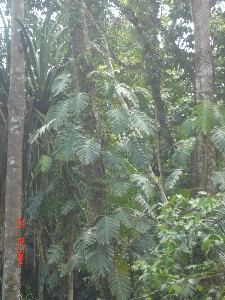 |
kʰɑʈɔŋ खाटौङ N सं. a kind of tree; एक प्रकार का पेड़. SD: flora, फूल-पत्ती.
kɛmo कैमो N सं. a kind of tree that bears edible fruits; एक प्रकार का पेड़ जिसके फल खाए जाते हैं. SD: flora, फूल-पत्ती.
kɛn कैन VAR: kino कीनो; kino bɑle कीनो बाले. N सं. a kind of creeper; एक प्रकार की लता. SD: flora, फूल-पत्ती. NT: This creeper is roasted and then used for curing headaches. लता को भूनकर और पीसकर दवाई बनाई जाती है जो सिर दर्द भगाने के काम आती है।.
kiːbir कीऽबीर N सं. a kind of tree; एक प्रकार का पेड़. SD: flora, फूल-पत्ती.
kʰibirtɛc खीबीरतैच MORPH: kʰibir-tɛc. N सं. leaves of the khibir tree; खीबीर पेड़ के पत्ते. SD: flora, फूल-पत्ती. NT: A paste made of these leaves is applied on the body to ward off honeybees while collecting honey. शहद इकट्ठा करते समय इस पत्ती का लेप शरीर पर लगाया जाता है ताकि मक्खियां न काटें।.
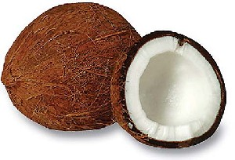 |
 kʰider खीदेर VAR: kʰidɛr खीदैर. N सं. coconut; नारियल. kʰider kotrɑkɔ ɖum de खीदेर कोत्राकौ डूम दे. Coconut is infected with worms. नारियल के अंदर कीड़े हैं।. SD: flora, फूल-पत्ती.
kʰider खीदेर VAR: kʰidɛr खीदैर. N सं. coconut; नारियल. kʰider kotrɑkɔ ɖum de खीदेर कोत्राकौ डूम दे. Coconut is infected with worms. नारियल के अंदर कीड़े हैं।. SD: flora, फूल-पत्ती.
 kʰiderone खीदेरओने MORPH: kʰider-one. N सं. coconut water; milk of coconut; नारियल पानी. SD: flora, फूल-पत्ती.
kʰiderone खीदेरओने MORPH: kʰider-one. N सं. coconut water; milk of coconut; नारियल पानी. SD: flora, फूल-पत्ती.
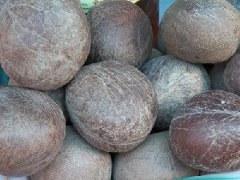 |
kʰiderpʰuŋ खीदेरफूङ MORPH: kʰider-pʰuŋ. N सं. coconut, dry; सूखा नारियल. SD: flora, फूल-पत्ती.
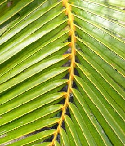 |
kʰidertɛc खीदेरतैच MORPH: kʰider-tɛc. N सं. leaf, coconut; नारियल का पत्ता. SD: flora, फूल-पत्ती.
kʰidertotkɔbɔ खीदेरतोत्कौबौ MORPH: kʰider-tot-kɔbɔ. N सं. coconut peel; नारियल का छिलका. SD: flora, फूल-पत्ती.
 |
kʰiderʈoʈɔ खीदेरटोटौ MORPH: kʰider-ʈoʈɔ. N सं. cluster of coconuts; नारियल का झुरमुट. SD: flora, फूल-पत्ती.
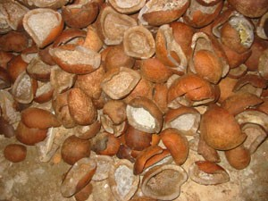 |
kʰiderʈɔe खीदेरटौए MORPH: kʰider-ʈɔe. N सं. coconut shell; नारियल का खोल. SD: flora, फूल-पत्ती.
 |
kʰiderʈɔŋ खीदेरटौङ MORPH: kʰider-ʈɔŋ. N सं. coconut tree; नारियल का पेड़. ʈʰot ɲo tot šoŋol kʰider ʈɔŋ ठोत ञो तोत शोङोल खीदेर टौङ. There is a coconut tree above my house. मेरे घर के ऊपर नारियल का पेड़ है।. SD: flora, फूल-पत्ती.
 kobu1 कोबू N सं. a kind of tree; एक प्रकार का पेड़. SD: flora, फूल-पत्ती. NT: The leaves of this tree are used for roofing and making umbrellas. The stem is used as thread for stitching. कोबू के पत्ते छाता व छप्पर बनाने के और तना धागा बनाने के काम आता है।. SEE: kobu2 ‘umbrella’ ‘छतरी; छाता कोबूhm:{2}’.
kobu1 कोबू N सं. a kind of tree; एक प्रकार का पेड़. SD: flora, फूल-पत्ती. NT: The leaves of this tree are used for roofing and making umbrellas. The stem is used as thread for stitching. कोबू के पत्ते छाता व छप्पर बनाने के और तना धागा बनाने के काम आता है।. SEE: kobu2 ‘umbrella’ ‘छतरी; छाता कोबूhm:{2}’.
kocɑ कोचा N सं. a kind of fruit; a kind of creeper; एक प्रकार का फल; एक प्रकार की लता या बेल. SD: edible fruit, खाद्य फल, flora, फूल-पत्ती. NT: This fruit is used for making jungle wine. जंगली/ देसी शराब बनाने में काम आने वाला फल और बेलें।.
 koetoʈɔŋ कोएतोटौङ MORPH: koeto-ʈɔŋ. N सं. jackfruit tree; कटहल का पेड़. SD: flora, फूल-पत्ती. NT: Used for making boats. नाव बनाने में काम आता है।.
koetoʈɔŋ कोएतोटौङ MORPH: koeto-ʈɔŋ. N सं. jackfruit tree; कटहल का पेड़. SD: flora, फूल-पत्ती. NT: Used for making boats. नाव बनाने में काम आता है।.
 koɛto कोऐतो N सं. wild thorny bush; जंगली कंटीली झाड़ी. SD: flora, फूल-पत्ती.
koɛto कोऐतो N सं. wild thorny bush; जंगली कंटीली झाड़ी. SD: flora, फूल-पत्ती.
 |
 konɑtɛc कोनातैच MORPH: konɑ-tɛc. N सं. Tendu leaves; तेंदू पत्ता. SD: flora, फूल-पत्ती.
konɑtɛc कोनातैच MORPH: konɑ-tɛc. N सं. Tendu leaves; तेंदू पत्ता. SD: flora, फूल-पत्ती.
konɑʈɔŋ कोनाटौङ MORPH: konɑ-ʈɔŋ. N सं. Tendu tree; तेंदू पेड़. SD: flora, फूल-पत्ती.
 |
korobitotɛc कोरोबीतोतैच N सं. a kind of leaf; एक प्रकार का पत्ता. SD: flora, फूल-पत्ती.
 |
korobitoʈɔlo कोरोबीतोटौलो MORPH: korobito-ʈɔlo. N सं. a kind of flower; एक प्रकार का फूल. Albizia julibrissi. SD: flora, फूल-पत्ती.
košir कोशीर N सं. mangrove tree with red leaves; लाल पत्तों वाला खाड़ी पेड़. SD: flora, फूल-पत्ती.
kot कोत N सं. cane leaf used for making houses; बेंत का पत्ता जो घर की छत बनाने में प्रयोग होता है. SD: flora, फूल-पत्ती.
kɔbo1 कौबो Etym: Jeru; जेरू. N सं. coconut husk; नारियल का छिलका. SD: flora, फूल-पत्ती. SEE: otkɔbo ‘bark; skin’ ‘छाल; चमड़ी औत्कौबो ’; kɔbo2 ‘palm leaf’ ‘ताड़ पत्र कौबोhm:{2}’.
kɔbo2 कौबो Etym: Jeru; जेरू. N सं. palm leaf; ताड़ पत्र. SD: flora, फूल-पत्ती. SEE: kɔbo1 ‘coconut husk’ ‘नारियल का छिलका कौबोhm:{1}’.
kɔːcɑ कौऽचा N सं. a kind of creeper; एक प्रकार की लता. SD: flora, फूल-पत्ती.
 |
kɔito कौईतो VAR: kɔːyɑto कौऽयातो. N सं. a kind of tree; दमदम पेड़. SD: flora, फूल-पत्ती.
kɔlɔ1 कौलौ VAR: kɔlʷo कौल्वो; kɔːlɔ कौऽलौ. N सं. bamboo; बांस. SD: flora, फूल-पत्ती. SEE: kɔlɔ2 ‘ghost’ ‘भूत कौलौhm:{2}’; kɔlɔ3 ‘kite’ ‘चील कौलौhm:{3}’; kɔlɔ4 ‘proper name’ ‘व्यक्तिविशेष नाम कौलौhm:{4}’.
kɔpo कौपो VAR: kɑːkɔ काऽकौ. N सं. banana tree; केले का पेड़. SD: flora, फूल-पत्ती.
kɔpʰutɛic कौफूतैईच MORPH: kɔpʰu-tɛic. N सं. banana leaf; केले का पत्ता. SD: flora, फूल-पत्ती.
kɔrɔ कौरौ N सं. green cane leaf; कच्चा बेंत का पत्ता. SD: flora, फूल-पत्ती.
 kɔrɔiɲ2 कौरौईञ VAR: kɔːrɔɲ कौऽरौञ; kɔrɔin कौरौईन. Etym: Jeru; जेरू. VAR: koːrɑn कोऽरान. N सं. Gurjan tree; गर्जन पेड़. Dipterocarpus incanus. SD: flora, फूल-पत्ती. SEE: kɔrɔiɲ1 ‘dugong’ ‘डूगोंग; पानी सूअर कौरौईञhm:{1}’.
kɔrɔiɲ2 कौरौईञ VAR: kɔːrɔɲ कौऽरौञ; kɔrɔin कौरौईन. Etym: Jeru; जेरू. VAR: koːrɑn कोऽरान. N सं. Gurjan tree; गर्जन पेड़. Dipterocarpus incanus. SD: flora, फूल-पत्ती. SEE: kɔrɔiɲ1 ‘dugong’ ‘डूगोंग; पानी सूअर कौरौईञhm:{1}’.
kɔrɔiɲɔrɔ कौरौईञौरौ MORPH: kɔrɔiɲ-ɔrɔ. N सं. flower and fruit of a gurjan tree (brownish colour); गर्जन पेड़ का फल व फूल (भूरे रंग के). SD: flora, फूल-पत्ती. NT: The blooming of this flower is associated with the hunting period in the sea when the fat content in turtles and fish is high. ऐसा माना जाता है कि इसके फूलते ही समुद्री जीवों में वसा की मात्रा अधिक पाई जाती है। गर्जन पेड़ के फूलते ही समुद्र में शिकार करना लाभदायक माना जाता है।.
kɔrɔiɲpʰɔʈ कौरौईञफौट MORPH: kɔrɔiɲ-pʰɔʈ. N सं. Gurjan flower; गर्जन फूल. SD: flora, फूल-पत्ती. NT: This flower blooms in very hot weather. कड़कती गर्मी में खिलने वाला गर्जन फूल।.
 |
kɔt4 कौत VAR: kɔːt कौऽत. N सं. palm tree; ताड़ का पेड़. SD: flora, फूल-पत्ती. SEE: kɔt1 ‘cough’ ‘खांसना कौतhm:{1}’; kɔt2 ‘roof’ ‘छत कौतhm:{2}’; kɔt3 ‘soil; statue of deity’ ‘मिट्टी; देवी की मूर्ति कौतhm:{3}’.
kɔttɛc कौत्तैच MORPH: kɔt-tɛc. N सं. cane leaf; बेंत का पत्ता. SD: flora, फूल-पत्ती.
kɔttɛrno कौत्तैरनो MORPH: kɔt-tɛr-no. N सं. stitched leaves (to make house); सिले हुए पत्ते (घर बनाने के लिये). SD: flora, फूल-पत्ती, tool, औज़ार.
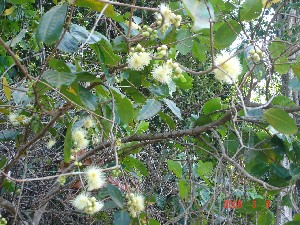 |
kʰɔʈoʈɔlo खौटोटौलो MORPH: kʰɔʈo-ʈɔlo. N सं. flower of wild Jamun; जंगली जामुन का फूल. SD: flora, फूल-पत्ती.
kʰulecmo खूलेचमो N सं. creeper, white; सफ़ेद लता. SD: flora, फूल-पत्ती.
kʰuli खूली Etym: Jeru; जेरू. N सं. a kind of long thick bamboo; एक प्रकार का लम्बा मोटा बांस. SD: flora, फूल-पत्ती.
 kʰulu खूलू Etym: Sare; सारे. N सं. bamboo used to kill turtles; बांस जो कछुआ मारने के लिए प्रयोग होता था. SD: flora, फूल-पत्ती, tool, औज़ार. NT: Same as ‘toe’ in Jeru. जेरो भाषा का ‘तोए’।.
kʰulu खूलू Etym: Sare; सारे. N सं. bamboo used to kill turtles; बांस जो कछुआ मारने के लिए प्रयोग होता था. SD: flora, फूल-पत्ती, tool, औज़ार. NT: Same as ‘toe’ in Jeru. जेरो भाषा का ‘तोए’।.
 kʰuːp खूऽप Etym: Sare; सारे. N सं. a kind of long thick bamboo; एक प्रकार का लम्बा मोटा बांस. SD: flora, फूल-पत्ती. NT: This bamboo is used for roasting big game such as pig, turtle, etc. ऐसा बड़ा बांस जो बड़ा शिकार भूनने में काम आता है जैसे सूअर, कछुआ आदि।.
kʰuːp खूऽप Etym: Sare; सारे. N सं. a kind of long thick bamboo; एक प्रकार का लम्बा मोटा बांस. SD: flora, फूल-पत्ती. NT: This bamboo is used for roasting big game such as pig, turtle, etc. ऐसा बड़ा बांस जो बड़ा शिकार भूनने में काम आता है जैसे सूअर, कछुआ आदि।.
lɑbo लाबो Etym: North Andaman; उत्तरी अण्डमान. VAR: lɑboː लाबोऽ; lɑːbo लाऽबो. N सं. edible potato roots; rope-like tuber (brown); खाद्य आलू की जड़ें; रस्सी जैसा भूरा कन्द. SD: flora, फूल-पत्ती.
lɑcɑ2 लाचा VAR: lɑːcɑ लाऽचा. N सं. a tree with white bark; सफ़ेद छाल वाला पेड़. SD: flora, फूल-पत्ती. SEE: lɑcɑ1 ‘bird’ ‘पक्षी लाचाhm:{1}’.
lɑi लाई N सं. cane fruit; बेंत का फल. SD: flora, फूल-पत्ती.
lɑifir लाईफीर MORPH: lɑi-fir. N सं. a kind of red cane; एक प्रकार की लाल बेंत. SD: flora, फूल-पत्ती.
 |
lɑroʈɔl लारोटौल N सं. a kind of flower; एक प्रकार का फूल. Nekonata. SD: flora, फूल-पत्ती.
lɑroʈɔlo लारोटौलो MORPH: lɑro-ʈɔlo. N सं. flowering tree; फूलों का पेड़. SD: flora, फूल-पत्ती. NT: This flower blossoms in hot weather. इस पेड़ के फूल गर्मी में खिलते हैं।.
 |
lɑʈʰɑo लाठाओ N सं. a kind of tree used for making poles; एक प्रकार का पेड़ जिसका प्रयोग खंबा बनाने के लिए होता है. SD: flora, फूल-पत्ती.
 |
lɑʈʰɑotɛc लाठाओतैच MORPH: lɑʈʰɑo-tɛc. N सं. leaf of the lathao tree; लाठाओ पेड़ का पत्ता. SD: flora, फूल-पत्ती.
lɑːwfɑn लाऽवफान N सं. betel leaf; पान का पत्ता. SD: flora, फूल-पत्ती.
 lecʈoe लेच्टोए MORPH: lec-ʈoe. N सं. bamboo used to make arrow; तीर बनाने के प्रयोग में आने वाला बांस. SD: flora, फूल-पत्ती, tool, औज़ार.
lecʈoe लेच्टोए MORPH: lec-ʈoe. N सं. bamboo used to make arrow; तीर बनाने के प्रयोग में आने वाला बांस. SD: flora, फूल-पत्ती, tool, औज़ार.
loroʈɔlɔ लोरोटौलौ MORPH: loro-ʈɔlɔ. N सं. a kind of flower; एक प्रकार का फूल. SD: flora, फूल-पत्ती. NT: The blooming of this flower is associated with the hunting period in the sea which is best for catching Phiku and Nuri fishes. इसके खिलने के समय समुद्र में फीकू और नूरी मछलियों का शिकार ख़ूब मिलता है।.
lotʰ लोथ VAR: loʈʰ लोठ. N सं. bamboo; बांस. SD: flora, फूल-पत्ती.
lɔrʈɔŋ लौरटौङ MORPH: lɔr-ʈɔŋ. N सं. a poisonous tree; एक ज़हरीला पेड़. SD: flora, फूल-पत्ती.
 mikʰu1 मीखू N सं. a large tree which is never used for making canoes as it has a tendency to sink; एक बड़ा पेड़ जो डोंगी बनाने में प्रयोग नहीं होता क्योंकि उससे डूबने का ख़तरा रहता है. SD: flora, फूल-पत्ती. SEE: mikʰu2 ‘underside of dugong’ ‘डूगोंग का पेट मीखूhm:{2}’.
mikʰu1 मीखू N सं. a large tree which is never used for making canoes as it has a tendency to sink; एक बड़ा पेड़ जो डोंगी बनाने में प्रयोग नहीं होता क्योंकि उससे डूबने का ख़तरा रहता है. SD: flora, फूल-पत्ती. SEE: mikʰu2 ‘underside of dugong’ ‘डूगोंग का पेट मीखूhm:{2}’.
mikulu मीकूलू Etym: North Andaman; उत्तरी अण्डमान. N सं. edible roots; जड़ें, खाद्य. SD: flora, फूल-पत्ती.
mino2 मीनो Etym: North Andaman; उत्तरी अण्डमान. N सं. a thorny edible tuber; एक कंटीला खाद्य कंद. SD: flora, फूल-पत्ती. SEE: mino1 ‘potato’ ‘आलू मीनोhm:{1}’.
minobɑlɔ मीनोबालौ MORPH: mino-bɑlɔ. N सं. potato creeper; आलू की बेल. SD: flora, फूल-पत्ती.
miɔe मीऔए N सं. lemon; नींबू. SD: flora, फूल-पत्ती, edible fruit, खाद्य फल.
mirši मीरशी ADJ वि. uprooted (tree); उखड़े हुए (पेड़). ʈʰibit pʰilel ʈɔŋbi mirši ठीबीत फीलेल टौङबी मीरशी. All the trees have died because of the tsunami. सूनामी की वजह से सारे पेड़ मर गए।. SD: attribute, विशेषता, flora, फूल-पत्ती.
miyɔeʈɔŋ मीयौएटौङ MORPH: miyɔe-ʈɔŋ. N सं. lemon tree; नींबू का पेड़. SD: flora, फूल-पत्ती.
moːe मोऽए Etym: Bo. N सं. wood used for making outrigger, the boya; उलण्डी/बोया बनाने में प्रयोग आने वाली लकड़ी. SD: boat related, नाव सम्बंधी, flora, फूल-पत्ती.
mɔr मौर N सं. creeper; लता. SD: flora, फूल-पत्ती.
mːreːmo मिऽरेऽमो N सं. bush; झाड़ी. SD: flora, फूल-पत्ती.
mukui मूकूई Etym: Jeru; जेरू. VAR: modɑ मोदा. Etym: Bea; बेया. N सं. a kind of flower; एक प्रकार का फूल. SD: flora, फूल-पत्ती. NT: A winter-flower which blooms between mid-November and mid-February. सर्दी का फूल जो मध्य नवम्बर से मध्य फरवरी में खिलता है।.
ŋiro ङीरो VAR: niro नीरो. N सं. big leaf of Mahua tree; महुआ पेड़ का बड़ा पत्ता. SD: flora, फूल-पत्ती. NT: Used for covering the private parts of women. स्त्रियों के गुप्त अंगों को ढंकने में प्रयोग होता है।.
ɲireːŋo ञीरेऽङो N सं. bush; झाड़ी. SD: flora, फूल-पत्ती.
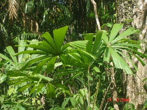 |
 ɲotɛc ञोतैच MORPH: ɲo-tɛc. VAR: nyo-tɛc न्योतैच. N सं. leaf used for constructing houses; पत्ता जो घर बनाने के काम आता है. SD: flora, फूल-पत्ती. NT: Also used for making umbrellas. इन पत्तियों से छतरियां भी बनाई जाती हैं।.
ɲotɛc ञोतैच MORPH: ɲo-tɛc. VAR: nyo-tɛc न्योतैच. N सं. leaf used for constructing houses; पत्ता जो घर बनाने के काम आता है. SD: flora, फूल-पत्ती. NT: Also used for making umbrellas. इन पत्तियों से छतरियां भी बनाई जाती हैं।.
ɲoʈɔŋ ञोटौङ MORPH: ɲo-ʈɔŋ. N सं. a kind of tree; एक प्रकार का पेड़. SD: flora, फूल-पत्ती.
okor ओकोर Etym: Jeru; जेरू. VAR: orɑ ओरा. Etym: Bea; बेया. N सं. a kind of flower; एक प्रकार का फूल. SD: flora, फूल-पत्ती. NT: It blooms between mid-February and mid-May. इसके खिलने का समय मध्य फरवरी से मध्य मई तक का है।.
olɔf ओलौफ VAR: olɔpʰ ओलौफ. N सं. a kind of tree used for making lighter canoes (like fibre boat); पतली व हल्की नाव (डोंगी) बनाने में काम आने वाला पेड़. SD: flora, फूल-पत्ती.
oŋtɛc ओङतैच MORPH: oŋ-tɛc. N सं. a kind of leaf; एक प्रकार का पत्ता. SD: flora, फूल-पत्ती. NT: Used for cooking turtle, fish, etc. कछुआ व मछली आदि के पकाने के काम आती है।.
otco ओतचो MORPH: ot-co. N सं. pollen; पराग. SD: flora, फूल-पत्ती.
otkɔbo ओत्कौबो MORPH: ot-kɔbo. VAR: etkɔwbo एत्कौवबो. N सं. bark; skin; छाल; चमड़ी. SD: flora, फूल-पत्ती. SEE: kɔbo ‘coconut husk’ ‘नारियल का छिलका कौबो ’.
otʈɔŋ ओत्टौङ N सं. branch; टहनी. SD: flora, फूल-पत्ती.
 |
 oʈʈɔŋ ओट्टौङ MORPH: oʈ-ʈɔŋ. VAR: er-ʈɔŋ एरटौङ; eʈʈɔŋ एट्टौङ. N सं. branch of a tree; पेड़ की शाखा. SD: flora, फूल-पत्ती. NT: Literal meaning: extended tree. शाब्दिक अर्थः विस्तृत पेड़।.
oʈʈɔŋ ओट्टौङ MORPH: oʈ-ʈɔŋ. VAR: er-ʈɔŋ एरटौङ; eʈʈɔŋ एट्टौङ. N सं. branch of a tree; पेड़ की शाखा. SD: flora, फूल-पत्ती. NT: Literal meaning: extended tree. शाब्दिक अर्थः विस्तृत पेड़।.
ɔːm औऽम N सं. a kind of tree; एक प्रकार का पेड़. SD: flora, फूल-पत्ती.
ɔŋ औङ N सं. a variety of wild banana tree; एक प्रकार का जंगली केले का पेड़. SD: flora, फूल-पत्ती.
ɔrotec औरोतेच MORPH: ɔro-tec. N सं. Pandanus leaf used to make mat or girdle-band; केवड़ा पत्ता (जिससे चटाई या करधनी बनाई जाती है). SD: flora, फूल-पत्ती.
 |
 ɔroʈɔlo औरोटौलो MORPH: ɔro-ʈɔlo. N सं. flower, of Pandanus; केवड़ा का फूल. SD: flora, फूल-पत्ती.
ɔroʈɔlo औरोटौलो MORPH: ɔro-ʈɔlo. N सं. flower, of Pandanus; केवड़ा का फूल. SD: flora, फूल-पत्ती.
ɔrɔ1 औरौ N सं. fruits with flowers; फूलों के साथ फल. SD: flora, फूल-पत्ती. SEE: ɔrɔ2 ‘leaf string’ ‘पत्तियों की डोरी औरौhm:{2}’.
ɔrɔ2 औरौ N सं. string of leaves. Women tie this around the waist; एक प्रकार की पत्तियों की डोरी जो करधनी की तरह बांधी जाती है।. SD: flora, फूल-पत्ती, costume & adornment, आभूषण एवं श्रृंगार. SEE: ɔrɔ1 ‘fruits with flowers’ ‘फल, फूलों के साथ औरौhm:{1}’.
ɔrʈɔy औरटौय N सं. a kind of tree, wood of which is used to make bows; चुई पेड़ जिसकी लकड़ी धनुष बनाने के काम में आती है. SD: flora, फूल-पत्ती.
 |
 pʰɑrɑko1 फाराको VAR: ɸɑrɑko फाराको; fɑrɑko फाराको; fɑːrɑːkkɔ फाऽराऽककौ. N सं. plant, from which bowstring is made; a kind of creeper; पौधा, जिससे धनुष की डोर बनायी जाती है; एक प्रकार की बेल. SD: flora, फूल-पत्ती. NT: Commonly used in daily life. Pregnant women are not supposed to go near it. रोज़मर्रा की ज़िंदगी में काम आने वाली बेल। गर्भवती महिला इस बेल के पास नहीं जाती क्योंकि ऐसा माना जाता है कि इसकी परछाईं से गर्भपात हो जाता है।. SEE: pʰɑrɑko2 ‘rope’ ‘रस्सी फाराकोhm:{2}’; pʰɑrɑko3 ‘thread’ ‘धागा फाराकोhm:{3}’.
pʰɑrɑko1 फाराको VAR: ɸɑrɑko फाराको; fɑrɑko फाराको; fɑːrɑːkkɔ फाऽराऽककौ. N सं. plant, from which bowstring is made; a kind of creeper; पौधा, जिससे धनुष की डोर बनायी जाती है; एक प्रकार की बेल. SD: flora, फूल-पत्ती. NT: Commonly used in daily life. Pregnant women are not supposed to go near it. रोज़मर्रा की ज़िंदगी में काम आने वाली बेल। गर्भवती महिला इस बेल के पास नहीं जाती क्योंकि ऐसा माना जाता है कि इसकी परछाईं से गर्भपात हो जाता है।. SEE: pʰɑrɑko2 ‘rope’ ‘रस्सी फाराकोhm:{2}’; pʰɑrɑko3 ‘thread’ ‘धागा फाराकोhm:{3}’.
 pʰɑrɑko3 फाराको VAR: ɸɑrɑko फाराको. N सं. thread used for tying arrows; तीर बांधनेवाली डोर. SD: flora, फूल-पत्ती. SEE: pʰɑrɑko1 ‘plant; creeper’ ‘पौधा; बेल फाराकोhm:{1}’; pʰɑrɑko2 ‘rope’ ‘रस्सी फाराकोhm:{2}’.
pʰɑrɑko3 फाराको VAR: ɸɑrɑko फाराको. N सं. thread used for tying arrows; तीर बांधनेवाली डोर. SD: flora, फूल-पत्ती. SEE: pʰɑrɑko1 ‘plant; creeper’ ‘पौधा; बेल फाराकोhm:{1}’; pʰɑrɑko2 ‘rope’ ‘रस्सी फाराकोhm:{2}’.
 |
pʰɑrɑkotɛc फाराकोतैच MORPH: pʰɑrɑko-tɛc. N सं. pharako leaves; फाराको पेड़ का पत्ता. SD: flora, फूल-पत्ती.
pʰɑrɑŋoɑt फाराङोआत MORPH: pʰɑrɑŋo-ɑt. N सं. wood of pharango tree; फाराङो पेड़ की लकड़ी. SD: flora, फूल-पत्ती. NT: Used as a firewood; this wood burns for a long time. इसकी लकड़ी देर तक जलती है। अतः ईंधन के काम आती है।.
 |
 pɑtɑ पाता Etym: North Andaman; उत्तरी अण्डमान. N सं. edible grub; mushroom found on the Gurjan tree; गस्सा; कुकुरमुत्ता. SD: flora, फूल-पत्ती.
pɑtɑ पाता Etym: North Andaman; उत्तरी अण्डमान. N सं. edible grub; mushroom found on the Gurjan tree; गस्सा; कुकुरमुत्ता. SD: flora, फूल-पत्ती.
pʰir फीर VAR: piːr पीऽर. N सं. cane; बेंत. SD: flora, फूल-पत्ती.
pʰirbɑlo फीरबालो MORPH: pʰir-bɑlo. N सं. creeper, of cane; बेंत की बेल. SD: flora, फूल-पत्ती.
pʰoco फोचो N सं. Tipok tree, an indigenous tree used for making canoes; टीपोक पेड़, एक स्वदेशी पेड़ जो डोंगी बनाने के काम आता है. SD: flora, फूल-पत्ती.
pʰocoʈɔlo2 फोचोटौलो MORPH: pʰoco-ʈɔlo. N सं. a white coloured flower; सफ़ेद रंग का फूल. SD: flora, फूल-पत्ती. NT: This flower forecasts the coming of a clear sky and sunshine in the near future. इस फूल का खिलना निकट भविष्य में आनेवाले धूपहले मौसम का द्योतक है. SEE: pʰocoʈɔlo1 ‘end, of intense summer’ ‘समाप्ति, भीषण गर्मी की फोचोटौलोhm:{1}’.
pʰokle फोकले N सं. a kind of edible mushroom; एक प्रकार की खाद्य खुम्बी/ कुकुरमुत्ता. SD: flora, फूल-पत्ती. NT: Grows amongst clusters of stones. यह कुकुरमुत्ता जो पत्थरों के ढेर में उगता है।.
 |
 por पोर VAR: pɔːr पौऽर; fɑr फार; pʰɔr फौर; ɸɔr फौर. N सं. a kind of small thin bamboo which is used for making baskets; छोटा पतला बांस जिससे टोकरी बनाई जाती है. SD: flora, फूल-पत्ती.
por पोर VAR: pɔːr पौऽर; fɑr फार; pʰɔr फौर; ɸɔr फौर. N सं. a kind of small thin bamboo which is used for making baskets; छोटा पतला बांस जिससे टोकरी बनाई जाती है. SD: flora, फूल-पत्ती.
 |
pʰɔrɔto2 फौरौतो VAR: pɔrɔto पौरौतौ. Etym: Jeru; जेरू. N सं. Caryota palm tree; चारयोता ताड़ का पेड़. SD: flora, फूल-पत्ती. NT: The flowers are used for decoration. The sprouts of this tree are edible. इस पेड़ के फूल सजाने के काम आते हैं। इस पेड़ के अंकुर खाए जाते हैं।. SEE: pʰɔrɔto1 ‘fruit’ ‘फल फौरौतोhm:{1}’.
 pɔtole पौतोले VAR: pʰɔʈole फौटोले. N सं. bamboo used for hunting pigs; बांस जिससे सूअर का शिकार किया जाता है. SD: flora, फूल-पत्ती, tool, औज़ार.
pɔtole पौतोले VAR: pʰɔʈole फौटोले. N सं. bamboo used for hunting pigs; बांस जिससे सूअर का शिकार किया जाता है. SD: flora, फूल-पत्ती, tool, औज़ार.
pʰudo फूदो N सं. leaves used to make cottage or broom; झोंपड़ी या झाड़ू बनाने के प्रयोग में आने वाला पत्ता. SD: flora, फूल-पत्ती.
puliu पूलीऊ Etym: Jeru; जेरू. VAR: bɑlyɑ बाल्या. Etym: Bea; बेया. N सं. a kind of flower; एक प्रकार का फूल. SD: flora, फूल-पत्ती. NT: Blooming of this flower signals the end of winter. It blooms between mid-February and mid-May. इस फूल का खिलना सर्दियों के मौसम का ख़त्म होने का सूचक है। यह फूल मध्य फरवरी से मध्य मई तक खिलता है।.
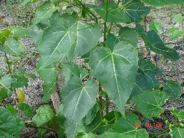 |
 rɑmuʈɔŋ रामूटौङ N सं. a kind of tree; एक प्रकार का पेड़. SD: flora, फूल-पत्ती.
rɑmuʈɔŋ रामूटौङ N सं. a kind of tree; एक प्रकार का पेड़. SD: flora, फूल-पत्ती.
rɑo राओ Etym: Bea; बेया. N सं. ficus; एक प्रकार का फूल. SD: flora, फूल-पत्ती.
re रे Etym: Jeru; जेरू. VAR: rece रेचे. Etym: Bea; बेया. N सं. a kind of flower; एक प्रकार का फूल. SD: flora, फूल-पत्ती. NT: This is a flower of the rainy season. It blooms between mid-May and August-end. वर्षा ऋतु का फूल। यह फूल मध्य मई से मध्य अगस्त तक खिलता है।.
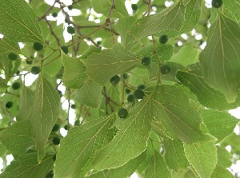 |
 reŋo रेङो Etym: Jeru; जेरू. VAR: rɛŋo रैङो. N सं. Ficus tree; एक प्रकार का पेड़. SD: flora, फूल-पत्ती.
reŋo रेङो Etym: Jeru; जेरू. VAR: rɛŋo रैङो. N सं. Ficus tree; एक प्रकार का पेड़. SD: flora, फूल-पत्ती.
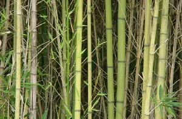 |
 rɛt रैत VAR: rɛʈ रैट. N सं. big bamboo that holds water; बड़ा बांस जिसमें पानी भरा जा सकता है. SD: flora, फूल-पत्ती. NT: Many bamboo are tied together and the cavities are used to collect water. बांसों को एक साथ बांधकर उनकी नली में पानी भरा जाता है।.
rɛt रैत VAR: rɛʈ रैट. N सं. big bamboo that holds water; बड़ा बांस जिसमें पानी भरा जा सकता है. SD: flora, फूल-पत्ती. NT: Many bamboo are tied together and the cavities are used to collect water. बांसों को एक साथ बांधकर उनकी नली में पानी भरा जाता है।.
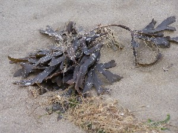 |
rɔetɛc रौएतैच MORPH: rɔe-tɛc. VAR: rɔe-tec रौएतेच. N सं. a kind of sea weed generally eaten by sea animals like the dugong; एक प्रकार की समुद्री घास जिसको समुद्री जानवर जैसे डूगोंग आदि खाते हैं. SD: flora, फूल-पत्ती.
rɔpʰe रौफे Etym: Jeru; जेरू. N सं. palm tree; ताड़ का पेड़. SD: flora, फूल-पत्ती.
rɔːwɔʈɔːy रौऽवौटौऽय MORPH: rɔːwɔ-ʈɔːy. N सं. a kind of tree used for making boats; एक प्रकार का पेड़ जो नाव बनाने के काम आता है. SD: flora, फूल-पत्ती.
šikototec शीकोतोतेच MORPH: šikoto-tec. VAR: šikoto-tɛc शिकोतोतैच. N सं. leaf of the Mahua; महुआ का पत्ता. Bassia latifolia. SD: flora, फूल-पत्ती. NT: Because of their large size, women use these leaves to cover their private parts. बड़े आकार के कारण इस पत्ते से स्त्रियां अपने गुप्त अंगों को ढकती हैं।.
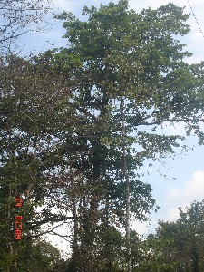 |
šikotoʈoŋ शिकोतोटोङ MORPH: šikoto-ʈoŋ. N सं. Mahua tree; महुआ पेड़. Bassia latifolia. SD: flora, फूल-पत्ती.
 sikɔto सीकौतो VAR: sikoto सीकोतो; šikoto शीकोतो. N सं. a kind of tree; महुआ का पेड़. Bassia latifolia. SD: flora, फूल-पत्ती.
sikɔto सीकौतो VAR: sikoto सीकोतो; šikoto शीकोतो. N सं. a kind of tree; महुआ का पेड़. Bassia latifolia. SD: flora, फूल-पत्ती.
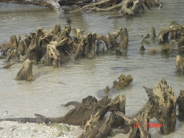 |
sikɔtɔtɑrɑbuco सीकौतौताराबूचो MORPH: sikɔtɔ-tɑrɑ-buco. N सं. roots of the Mahua tree; महुआ पेड़ की जड़ें. Bassia latifolia. SD: flora, फूल-पत्ती.
šimi शीमी N सं. mangrove tree with broad leaves; चौड़े पत्तों वाला खाड़ी पेड़. SD: flora, फूल-पत्ती.
širik शीरीक N सं. a kind of tree; एक प्रकार का पेड़. SD: flora, फूल-पत्ती. NT: The bark of this tree is used for making jungle wine. जंगली शराब बनाने के काम में आने वाली छाल।.
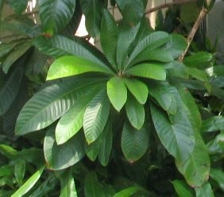 |
soɛtɛc सोऐतैच MORPH: soɛ-tɛc. VAR: sweː-tec स्वेऽतेच; soi-tɛc सोईतैच; soːyɑtec सोऽयातेच. N सं. sui leaf; सूई पत्ता. SD: flora, फूल-पत्ती. NT: Used for making mats and cooking turtle. The tree bears brown fruits. सूई पत्ता चटाई बनाने और कछुआ पकाने में उपयुक्त होता है। सूई के पेड़ में भूरे रंग के फल लगते हैं।.
 soye सोये VAR: soeʈɔŋ सोएटौङ. N सं. sui tree; सूई पेड़. SD: flora, फूल-पत्ती. NT: The leaves of this tree are used as thatching. इसकी पत्तियां छप्पर बनाने में काम आती हैं।.
soye सोये VAR: soeʈɔŋ सोएटौङ. N सं. sui tree; सूई पेड़. SD: flora, फूल-पत्ती. NT: The leaves of this tree are used as thatching. इसकी पत्तियां छप्पर बनाने में काम आती हैं।.
tɑjiotec ताजीओतेच MORPH: tɑjio-tec. VAR: tɑjio-tɛc ताजीओतैच. N सं. leaf, betel; पान का पत्ता. SD: flora, फूल-पत्ती.
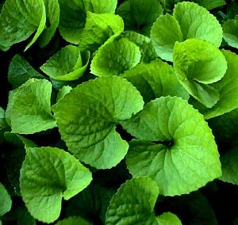 |
 tec1 तेच VAR: tɛc तैच. N सं. leaf; पत्ता. SD: flora, फूल-पत्ती. SEE: tec2 ‘small; diminutive’ ‘छोटा; नन्हा तेचhm:{2}’; tec3 ‘sparrow’ ‘गौरैया तेचhm:{3}’.
tec1 तेच VAR: tɛc तैच. N सं. leaf; पत्ता. SD: flora, फूल-पत्ती. SEE: tec2 ‘small; diminutive’ ‘छोटा; नन्हा तेचhm:{2}’; tec3 ‘sparrow’ ‘गौरैया तेचhm:{3}’.
teɽtiyɑ तेड़तीया N सं. bark; छाल. SD: flora, फूल-पत्ती.
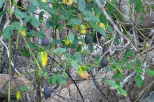 |
tʰipʈɔŋ थीपटौङ MORPH: tʰip-ʈɔŋ. N सं. Karang tree (the members of the tribe climbed this tree to escape from the tsunami); कारांग पेड़ (इस पेड़ पर चढ़कर ग्रेट अण्डमानी लोगों ने सूनामी से अपनी जान बचाई). SD: flora, फूल-पत्ती. NT: The branches of this tree are used for making toothbrushes (‘datun’). The bark of this tree is used as a pain reliever. इस पेड़ की शाखाएं दातुन बनाने के काम आती हैं। इसकी छाल से दर्दनाशक दवाई बनाई जाती है।.
toːle तोऽले N सं. coconut husk; नारियल का छिलका. SD: flora, फूल-पत्ती.
tompʰoŋ तोम्फोङ MORPH: tom-pʰoŋ. N सं. forest, dense; घना जंगल. SD: flora, फूल-पत्ती.
toːrop तोऽरोप N सं. a kind of tree; एक प्रकार का पेड़. SD: flora, फूल-पत्ती. NT: Used for making canoes. Looks like an almond tree. बादाम के पेड़ की तरह दिखने वाला यह पेड़ डोंगी बनाने के काम आता है।.
toːyɑwɑʈʈɔ तोऽयावाट्टौ N सं. a kind of tree; एक प्रकार का पेड़. SD: flora, फूल-पत्ती.
 tubut तूबूत VAR: tubuʈ तूबूट. N सं. projecting trunk; चौड़ा बाहर निकलता हुआ तना. tubut-il tʰire cɑmo तूबूतील थीरे चामो. The child hid himself in the trunk (of a tree). बच्चा (पेड़ के) तने में छुप गया।. SD: flora, फूल-पत्ती. NT: Jarawas strike it with a stone, so that it makes a resonating sound, to alert the community of expected danger. जारवा लोग अक्सर इसके �
tubut तूबूत VAR: tubuʈ तूबूट. N सं. projecting trunk; चौड़ा बाहर निकलता हुआ तना. tubut-il tʰire cɑmo तूबूतील थीरे चामो. The child hid himself in the trunk (of a tree). बच्चा (पेड़ के) तने में छुप गया।. SD: flora, फूल-पत्ती. NT: Jarawas strike it with a stone, so that it makes a resonating sound, to alert the community of expected danger. जारवा लोग अक्सर इसके �